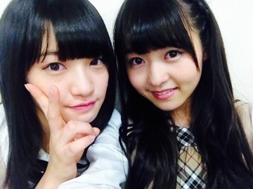
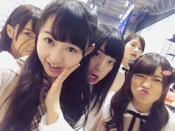

| 2013/12 10 Tue | 3.75の女。524回目 |
梅こんぶ茶飲みながら投稿。
昨日はパシフィコ横浜で
7th初の全国握手会でしたー

前よりもステージが広くて
なによりお客さんの数にびっくり！
だって、前の全握のときと景色が
全然違うんですよ。
奥行きが...
ステージの隅まで向かわないと
隅の方のお客さんが見えなくなって、
前よりも距離が遠かったなー
♪バレッタ
♪初恋の人を今でも
♪私のために 誰かのために
♪やさしさとは
♪月の大きさ
♪そんなバカな...
披露するのを
ずっと楽しみにしてたのは
最後のそんなバカな...です。
MVのままの雰囲気でかなり面白い。
見ていない人は楽しみにしてて！
握手会はかなと♪

かなにまだきもいって言われてるの？
って心配してくれた; ;
まりかがかわいそうだよ
ってかなに注意してくれた; ;
かなりんファンやさしい; ;
MVと個人PVの感想...あと、
まりっか'17がロングヒットみたいで
リクエストされて何回か歌いました笑
女の子もたくさん来てくれた

最後まで残って締めの挨拶しました！
たくさんの方が来てくれて
本当に嬉しかったです。
ありがとうございました！
どんなにきもいって言われても
めげない私。


まいまい若月写り込みー
握手会の後は抽選で当たった方に
トレカコレクション用ファイルを
12レーンで一実と渡したよ

当たった方おめでとうございます！
年明け1月29日
乃木坂46初のライブDVDが
発売されます！やったーーーーーー
やっとだーーーーーー
1歳のバースデーライブ。
どう映ってるかわからないけど、
恥ずかしいけど見てほしいー！
豪華版は特典があるらしいーー
詳しくは公式サイトまで！
あああー武道館がんばろー
まりか
コメント(401)
2013/12/10 00:30